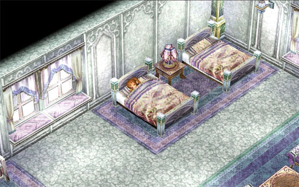
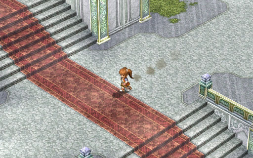
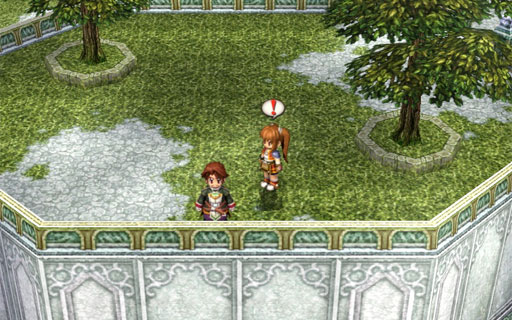
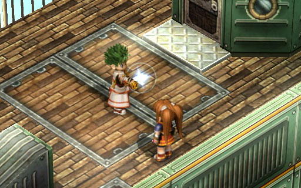
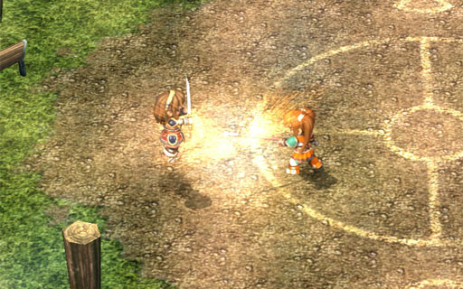
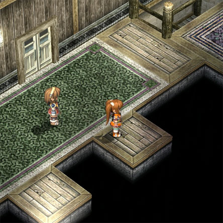
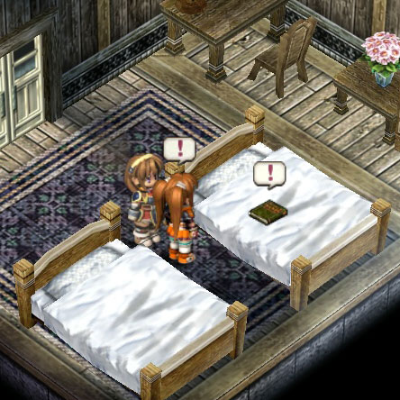
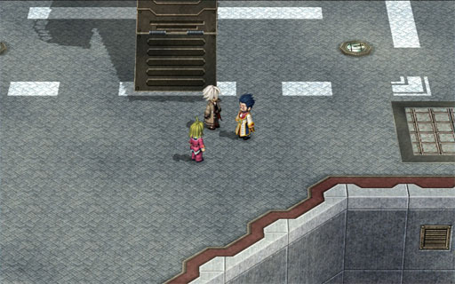
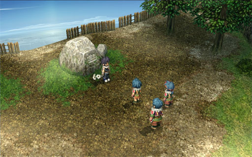

Hi, and welcome to game.midoshiro.com
It pains us to say that our site may be incomplete, but we are working to bring you more updates and info on the game as we speak!
When you hit an incomplete patch of walkthrough (e.g. Chapters 4 and later), feel free to watch a recorded playthrough on YouTube. On some videos, other players have left comments with excellent advice and strategy.
You can also visit our contact page to share your thoughts, ideas, and compliments. Diligent and confident completionists can also upload their best save files to help us provide the best and accurate info on the game!
Estelle wakes up in Grancel Castle and notices a missing Joshua. She finds Cassius (her dad) in the castle gardens. Not only is she unable to convince him to find Joshua, but he tells her not to try finding him either. Cassius mentions the Ouroboros, a shadowy organization trying to take over the world (and hence, the enemies in the game). Estelle finds out that Joshua was also a member in the Ouroboros, and was brainwashed/under hypnotism to feed information about the Bracers to them for the past five years.
She also finds out that Joshua made a promise to Cassius that he will disappear if he ever makes contact with the Ouroboros. And Estelle is hella pissed that nobody told her any of this. Estelle doesn't take this very well, so she runs back to her home in Rolent. On the way, she meets Kevin Graham, a travelling priest in the Septian Church. Under their encouragement, she agrees to do two-month Bracer training in the Le-Locle Canyon.


You start off in the castle garden. Head up the short stairs and cross over to the other side (no need to go up/down the red carpet) and take the stairs going up.


Feel free to explore Rolent and talk to the townspeople. To advance the plot, take the south exit, follow the road to make a U-turn, and enter the Bright home.
銀の意志 金の翼
Gin no Ishi, Kin no Tsubasa
Silver Will, Golden Wings

After eating breakfast with Anelace, head upstairs to the last room to grab Estelle's equipment. Head back down and Kurz will explain the next training session and the new SEVEN-hole orbment device.
You will get one of the new orbment devices, and if you are starting this game off a completed FC savegame, some additional items. You should also talk to the staff members for a recipe book and to craft some quartz. Don't forget to buy some healing food, such as the Vanilla Sandwich (香草三明治)
Advice Before buying quartz, it is definitely worthwhile to open the Bracer manual and review the list of spells. For those who have played FC, you will notice that the list has grown considerably. As the game progresses, you will be able to access progressively more powerful quartz (in the last chapter, you can buy quartz that adds 12 septium element power, allowing you cast some really powerful spells)
Advice If Kurz has given you Luck (see aside), you should definitely consider buying HP1 and Evade1. This will give you early access to La Tear ( x2 x1 ) which lets you heal in a small circle (Luck gives you the necessary x1 )
Exit the guild lodge and talk to Kurz at the bottom to continue. At the map, choose the Balstar Channel.
Spirit1, EP Restore 1, Medicine
EP Restore 1, Medicine, Resurrect Medicine, Scapegoat Puppet (替身木偶) (Resurrection accessory)
Attack1, Silver Earring, x10 , Resurrect Medicine, EP Restore 1, Cast1, Surprise Cookies (大吃一驚餅乾)
Estelle's training begins in the sewers. The first battle is to review battle mechanics (feel free to skip if you've played FC). The second isn't skippable as it introduces you to Chain Crafts (連鎖戰技). Basically, this allows you to chain multiple characters' attacks together (and, of course, the chain attacks get stronger the more people you chain). It's quite powerful if you use it effectively, such as if you chain 4 characters' attacks together with a Critical or Sepith Up AT bonus.
Advice If you are ever low on HP, remember to use the restoration device at the sewer entrance.
The sewers is filled with levers. Levers that turn up/down will drain water. Levers that turn left/right will open bridges. With the exception of the first lever in the sewer, the bridge will open no matter if you turn the lever left or right.
You will also find the Surprise Cookies in the sewers. SC introduces "attack foods", which can be used as items in battle to attack the enemy. The awesome benefit of attack foods is that it never misses and you're basically guaranteed to inflict the food's negative status on the enemy (unless they're resistant to it, like bosses). This is really important to keep in mind, as we will abuse the shit out of it in Chapter 6.
Visit the gameplay page for more details about Chain Crafts or Food.
There are also some trap chests in the sewers (marked above with ). These chests usually carry something nice (e.g. quartz, decent equipment) but they are also harder than standard battles. It's almost always worth it to open these chests, and it's always a good idea to heal up (and save) before opening them.
At the end of the sewers is a boss fight with Kurz. Remember to heal up and save.
This is an annoying boss battle as his regular attacks has a pushback effect. Kurz's specialty is his Illusionary Arts, which he starts using after his HP has dropped under a certain point to heal and boost defense.
Since attack magic has no distance limit, feel free to hit him with spells.
After you defeat him, Kurz drops Heaven Eye. This combines Eagle Vision with Information, so you can see enemies from afar and see better enemy information in battle.
In the morning, Estelle wakes to hear the sound of gunshots. Heading downstairs, she notices a wounded Kurz. And at this moment, one of the enemies breaks through the window and a forced battle occurs. The story continues whether you win or lose, but you do get extra BP if you win.
Don't let your HP get too low, as the enemy can do quite a bit of damage. But other than that, doing regular attacks should be enough to win. Do note that the enemy is able to inflict blind.
Estelle and Anelace then wake up in the Saint Croix Forest
Medicine x5, EP Restore 1 x2, Leather Armor
Leather Shoes
Battle Stick, Straightedge Sword, Leather Shoes
Natural Water (大自然恩惠之水), EP Restore 1
Leather Armor
Estelle and Anelace wakes up in a forest and discover their equipment is missing. There is also a decision to make, which affects your final BP score.
Your equipment is scattered across the forest, so you should avoid monster encounters until you're fully equipped. Fortunately, the monsters in the forest are more or less docile and they won't chase you.
The tent that you wake up beside has some items inside. You can also use it to rest and heal up.
At the end of the forest is the next boss. If you accidentally entered the boss map without being properly prepared, you are fortunately given a chance to retreat.
This is almost as bad as the first boss battle with Kurz, as this boss is equipped with a gun and can attack you from range.
She is also able to disrupt your spell casting. Despite this, you should still have one spell caster (Estelle) and one physical attacker (Anelace). Every time she disrupts the spellcaster, it means your attacker can survive longer.
When the boss is down to halfway or about 2000HP, feel free to unleash your 200CP S-Craft attacks.
Estelle and Anelace returns to the guild lodge and see it in a complete mess. You need to investigate six areas for clues:
Hopefully you earned a lot of septium crystals in the Saint Croix Forest. You have an opportunity to buy some more quartz.
Grab a copy of Gambler Jack #1 (see below). When you are done, head out to Grimsel Fortress.


After the investigation, look for a copy in the first bedroom on the second floor.
EP Restore 1, EP1, Medicine
EP Restore 1, Night Vision Goggles
ID Component
Who would have thought the Bracer Guild could afford to build a mock up of a fortress for training? Then again, considering how little they pay out as rewards....
On the first floor, after you open the first gate, you'll see a second gate. Remember to go to the room on the right side of the hallway first to turn on the power (the computer monitor says POW-OFF). Then the gate control on the left room will work (if you try to open the gate without power, Estelle will remark that nothing happened).
Warning After you open the second gate and make a left, there is a forced battle with 2 rabbits and 2 beetles.
The second floor features a dark room. If you hug the right side, you will enter a room with night vision goggles. You need to equip it for it to be useful (feel free to take it off after you exit the dark room).
At the stairs at the end of the third floor, remember to open the treasure chest for the ID Component. When you reach the computer terminal in the fourth floor, you need to go to the Item menu, choose the ID component, and then "use" it. There is a healing point, which only means one thing ...
Advice This is probably the hardest boss fight so far. Before fighting the boss, you should do one last orbment check. I play with Anelace as the melee attacker and I have set up Estelle as follows to be an attacker/support caster:Line 2 is the key as it allows Estelle to heal (and if both she and Anelace are closeby, heal together). Also, with the Heaven Eye adding x2 x3 x1 , Estelle can also cast Forte ( x2 x1 ) and boost Anelace's ATK without wasting CP casting Morale.
- Heaven Eye
- Line 1: Attack1 Cast1 Luck
- Line 2: HP1 Spirit1 Evade1
This battle is worse than the first one with Kurz.
Not only does he have the same knockback effect as Kurz, he also has two abilities that is more painful than his regular attacks (both do over 1000 damage).
If you're too far away from the boss, he'll occasionally get fed up and cast 幻術。乘風破浪. This is basically the same as Shadow Spear, although I'm not sure about the 20% instant-KO effect. And I'm sure you don't want to find out, so don't stray too far away from the boss and that will prevent him from casting it.
His other second powerful attack is 五月雨突擊, which is similar to Anelace's 8-Leaf Blitz, but with lots of spear thrusts. Pray that he doesn't use this with a septium AT bonus.
He will occasionally cast 幻術。平步升雲 which has a +STR, +SPD effect, but otherwise, he is just one of the bosses you have to grind through. Note that when his HP gets low, he will start healing himself. At this point, you should have Estelle and Anelace both attack him and then immediately follow up with their S-Craft attacks.
Advice You can start off the fight with Estelle casting Morale and having her and Anelace hit the boss as much as possible before the effect wears off. By this point, you might be needing healing. I typically have Estelle stay a bit farther away (but not too far) so both the boss and Anelace focus their attacks on each other. Estelle should then cast spells every turn, either healing, Forte, or some attack spell.


| Quest/Action | BP | Total |
|---|---|---|
| Main Quest: Comprehensive Training Exercise | 2 | 16 |
| ... wake up immediately | +3 | |
| ... win battle against invader | +3 | |
| ... choose "The Invaders" at St. Croix Forest | +3 | |
| ... choose "Moved to another base" at guild lodge | +3 | |
| ... choose "No need to call for help" in boss battle | +2 | |
| Total (this chapter) | 16 | |
| Total (cumulative) | 16 | |
Recipes: Vanilla Sandwich, Natural Water, Surprise Cookies
Books: Recipe Book, Liberl Times #1, Gambler Jack #1
Readers' Comments